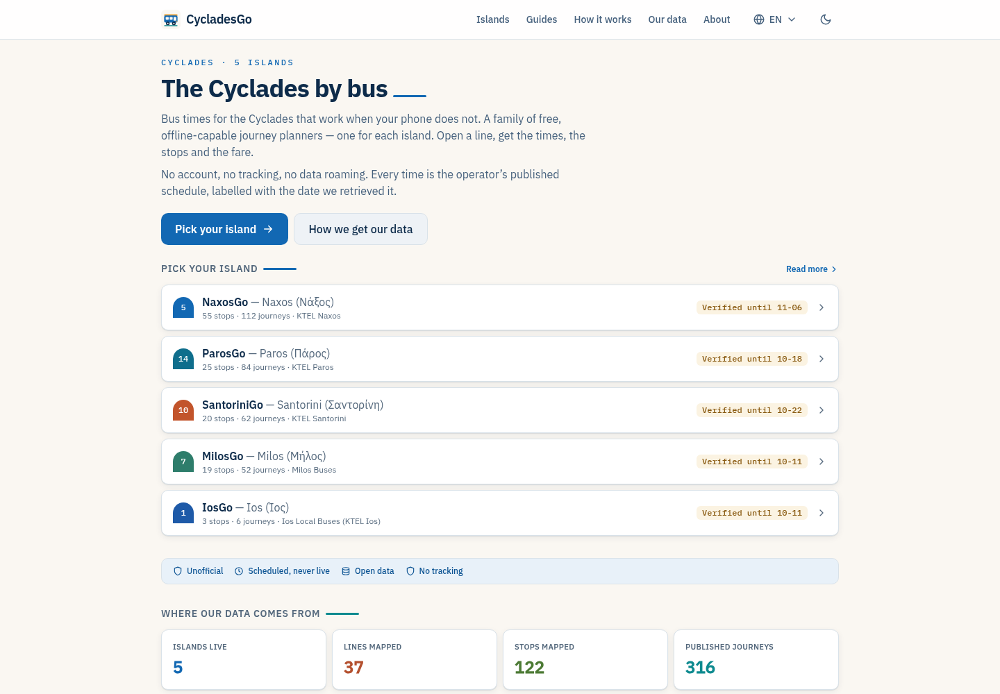
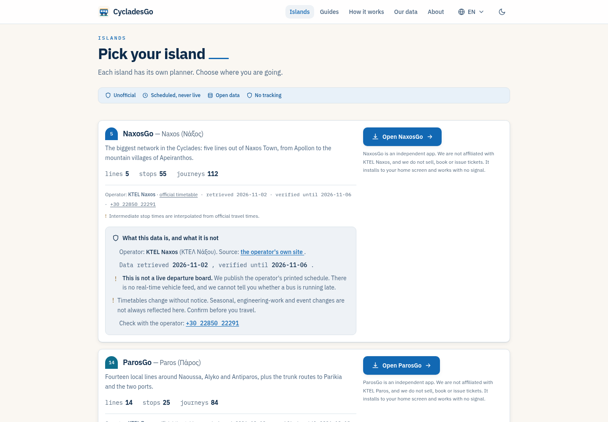
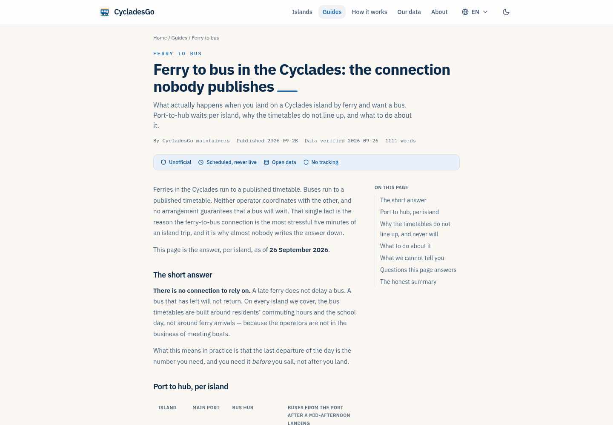
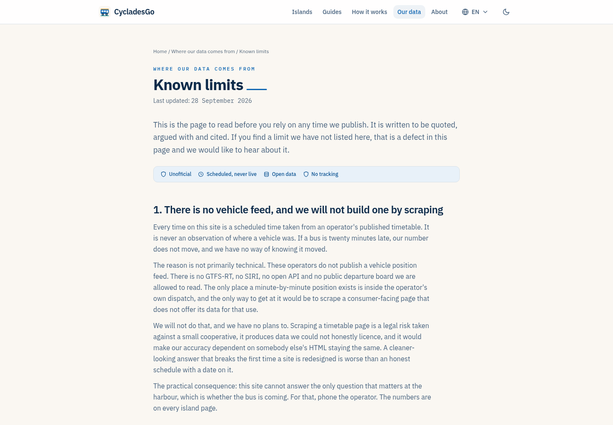

Geen marketinglaag, geen stockfoto's, geen gradient. Het merk is de belofte dat elke tijd klopt en elke bewering een datum heeft. Dit boek legt vast hoe dat eruitziet — op de site en in de mail.
Travellers vertrouwen een bus als de tijd klopt. Alles wat we maken moet dat vertrouwen dragen: de operator, de datum, de beperking. Geen superlatieven — een meting.
Elke tijd is de gepubliceerde dienstregeling, nooit "live". Elke pagina noemt de datum waarop we keken.
Geen "de Cycladen". Wel: Naxos, vijf lijnen, 55 haltes, geldig tot 6 november.
Warm papier, één accent, veel ruimte. De site is een instrument, geen etalage.
Alles komt uit de tokens in src/styles/global.css. Een hex buiten deze
set is een fout, geen smaak.
Kleur codeert een variabele, niet een mood. Groen betekent vers, amber bijna, rood verlopen. Nooit decoratief.
Lettertype: IBM Plex Sans (var). Mono alleen voor getallen, datums en bestandsnamen.
4 · 8 · 12 · 16 · 24 · 32 · 48 · 64. Nooit een willekeurige 13 of 27.
Twee radii: 6 (controls) en 10 (kaarten). Eén schaduw, geen glow.
Geen stockfoto's. Het logo, de bus en de dome-badge zijn het beeld.
Dezelfde tokens, vier dragers: de homepage, de eilandrij, een gids en de mail. Bij elk voorbeeld staat waarom het zo is en niet anders.
Bus times that work when your phone does not. One planner per island, built from the operator's published timetable — dated, not "live".
Zelfde vorm, andere kleur en ander werkwoord. Nooit dezelfde badge voor drie verschillende waarheden.
Ferries run to a published timetable. Buses run to a published timetable. Neither operator coordinates with the other, and no arrangement guarantees that a bus will wait.
There is no connection to rely on. A late ferry does not delay a bus. A bus that has left will not return.
What this means in practice: the last departure of the day is the number you need — and you need it before you sail, not after you land.
De laatste bus van Parikia naar Naoussa vertrekt om 21:00. Daarna rijdt er niets meer — ook niet als de ferry vertraging heeft.
Geen account, geen tracking. Je krijgt deze mail omdat je je eilandkoppeling opsloeg.
Dit is geen smaakdiscussie. Elke regel is te controleren in een screenshot of in de code.
Kort, concreet, in de taal van de reiziger. Nooit een claim zonder bewijs, nooit een belofte over iets wat we niet meten.
feiten, datums, operatornamen, "geschat" waar het geschat is, en "dat weten we niet".
superlatieven, "live", urgentie-taal, verzonnen aantallen, vage beloftes.
droog, vriendelijk, nooit grappig om de spanning te verbergen.
Vier schermen uit de build van vandaag. Hierop is dit boek gebaseerd — niet op een moodboard.




Op de homepage staat nu dezelfde beige badge bij een verse en een verlopen dataset. Drie staten, drie kleuren — zoals voorbeeld 2.
"Verified until 11-06" leest als een Amerikaanse datum. Maak het "6 nov" (en "18 okt" voor verlopen).
Een verlopen eiland hoort geen primaire CTA te zijn. Toon de badge, houd de link secundair, en zeg wat er aan de hand is.